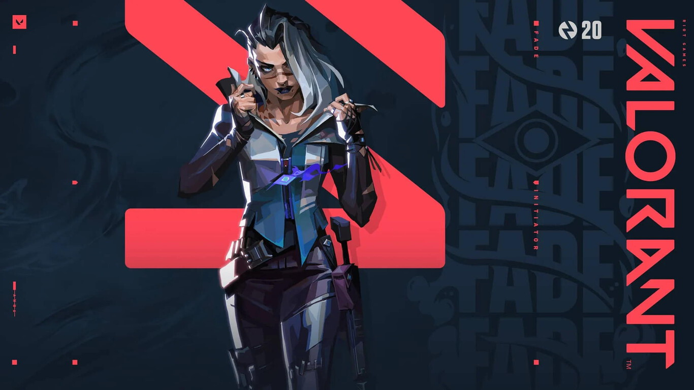
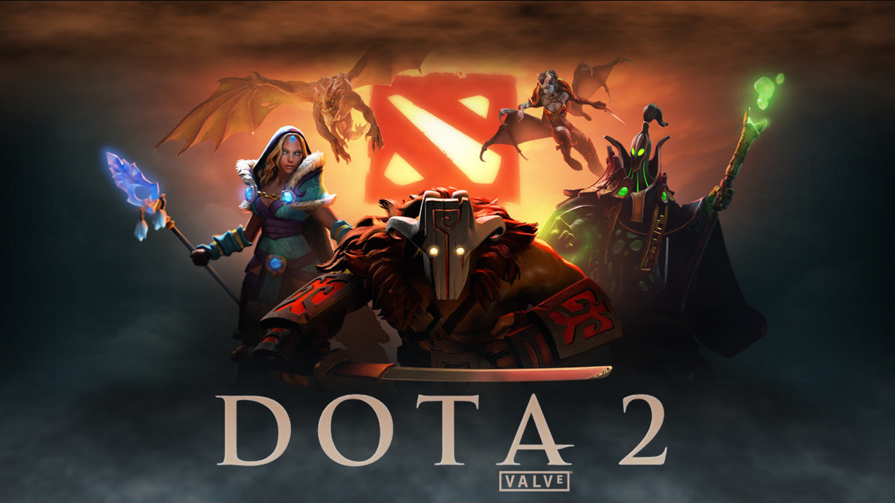

INTRODUCCION
El juego es una actividad inherente al ser humano.
Todos nosotros hemos aprendido a relacionarnos con nuestro ámbito familiar, material, social y cultural a través del juego.
Se trata de un concepto muy rico, amplio, versátil y ambivalente que implica una difícil categorización.
NOMBRES DE LOS JUEGOS
CALL OF DUTY
Call of Duty es una serie de videojuegos de disparos en primera persona, de estilo bélico,
desarrollada principal e inicialmente por Infinity Ward, Treyarch, Sledgehammer Games
y en menor proporción Raven Software y distribuida por Activision

VALORANT
Valorant es un hero shooter en primera persona multijugador gratuito desarrollado y publicado por Riot Games.
El juego se anunció por primera vez con el nombre en clave Project A en octubre de 2019.
Fue lanzado para Microsoft Windows el 2 de junio de 2020 después de su beta cerrada lanzada el 7 de abril de 2020.

DOTA
Dota 2 es un videojuego perteneciente al género de Arena de batalla en línea ARTS,
también conocido como MOBA, lanzado el 9 de julio del año 2013.
El juego fue desarrollado por la empresa Valve Corporation.
